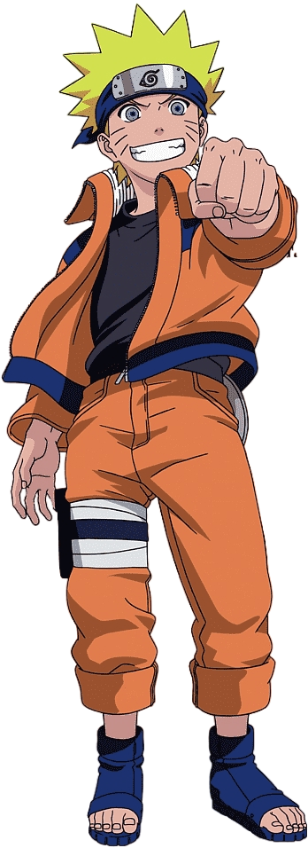
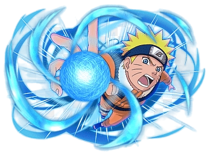
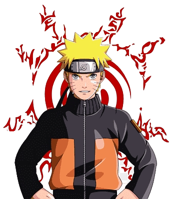

"Don’t underestimate me! I don’t quit and I don’t run."
|  |
Naruto is a Japanese manga series written and illustrated by Masashi Kishimoto. It tells the story of Naruto Uzumaki, a young ninja who seeks recognition from his peers and dreams of becoming the Hokage, the leader of his village. The story is told in two parts – the first set in Naruto's pre-teen years, and the second in his teens.PART ONE -A powerful fox known as the Nine-Tails attacks Konoha, the hidden leaf village in the Land of Fire, one of the Five Great Shinobi Countries in the Ninja World. In response, the leader of Konoha and the Fourth Hokage, Minato Namikaze (with his wife Kushina Uzumaki) seals the fox inside the body of his newborn son, Naruto Uzumaki, making Naruto a host of the beast this costs Naruto's father his life, and the Third Hokage returns from retirement to become the leader of Konoha again. Naruto is often scorned by Konoha's villagers for being the host of the Nine-Tails. Due to a decree by the Third Hokage forbidding any mention of these events, Naruto learns nothing about the Nine-Tails until 12 years later, when Mizuki, a renegade ninja, reveals the truth to Naruto. Naruto then defeats Mizuki in combat, earning the respect of his teacher Iruka Umino. Shortly afterward, Naruto becomes a ninja and joins with Sasuke Uchiha, against whom he often competes, and Sakura Haruno, on whom he has a crush, to form Team 7, under an experienced sensei, the elite ninja Kakashi Hatake. |
Like all the ninja teams from every village, Team 7 completes missions requested by the villagers, ranging from doing chores and being bodyguards to performing assassinations. After several missions, including a major one in the Land of Waves, Kakashi allows Team 7 to take a ninja exam, enabling them to advance to a higher rank and take on more difficult missions, known as Chunin Exams. During the exams, Orochimaru, a wanted criminal, invades Konoha and kills the Third Hokage for revenge. Jiraiya, one of the three legendary ninjas, declines the title of Fifth Hokage and searches with Naruto for Tsunade whom he chooses to become Fifth Hokage instead. During the search, it is revealed that Orochimaru wishes to train Sasuke because of his powerful genetic heritage, the Sharingan. After Sasuke attempts and fails to kill his older brother Itachi, who had showed up in Konoha to kidnap Naruto, he joins Orochimaru, hoping to gain from him the strength needed to kill Itachi. The story takes a turn when Sasuke leaves the village: Tsunade sends a group of ninja, including Naruto, to retrieve Sasuke, but Naruto is unable to persuade or force him to come back. Naruto and Sakura do not give up on Sasuke: Naruto leaves Konoha to receive training from Jiraiya to prepare himself for the next time he encounters Sasuke, while Sakura becomes Tsunade's apprentice. |
 |
|  |
PART TWO -Two and a half years later, Naruto returns from his training with Jiraiya. The Akatsuki starts kidnapping the hosts of the powerful Tailed Beasts. Team 7 and other Leaf ninja fight against them and search for their teammate Sasuke. The Akatsuki succeeds in capturing and extracting seven of the Tailed Beasts, killing all the hosts except Gaara, who is now the Kazekage. Meanwhile, Sasuke betrays Orochimaru and faces Itachi to take revenge. After Itachi dies in battle, Sasuke learns from the Akatsuki founder Tobi that Itachi had been ordered by Konoha's superiors to destroy his clan to prevent a coup; he accepted, on the condition that Sasuke would be spared. Devastated by this revelation, Sasuke joins the Akatsuki to destroy Konoha in revenge. As Konoha ninjas defeat several Akatsuki members, the Akatsuki figurehead leader, Nagato, kills Jiraiya and devastates Konoha, but Naruto defeats and redeems him, earning the village's respect and admiration. With Nagato's death, Tobi, disguised as Madara Uchiha (one of Konoha's founding fathers), announces that he wants to capture all nine Tailed Beasts to cast an illusion powerful enough to control all humanity and achieve world peace. The leaders of the five ninja villages refuse to help him and instead join forces to confront his faction and allies. That decision results in a Fourth Shinobi World War between the combined armies of the Five Great Countries (known as the Allied Shinobi Forces) and Akatsuki's forces of zombie-like ninjas. |